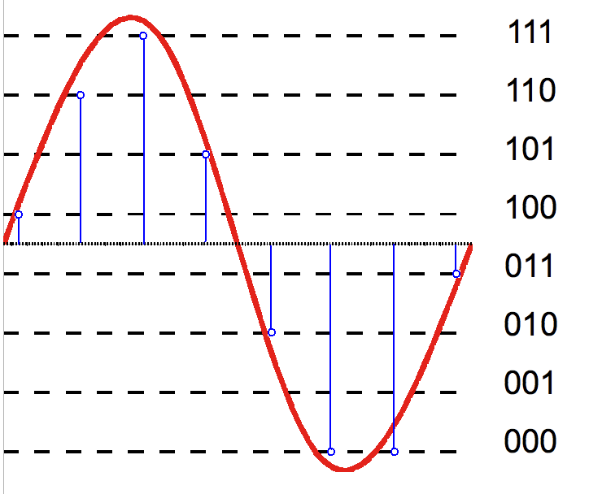
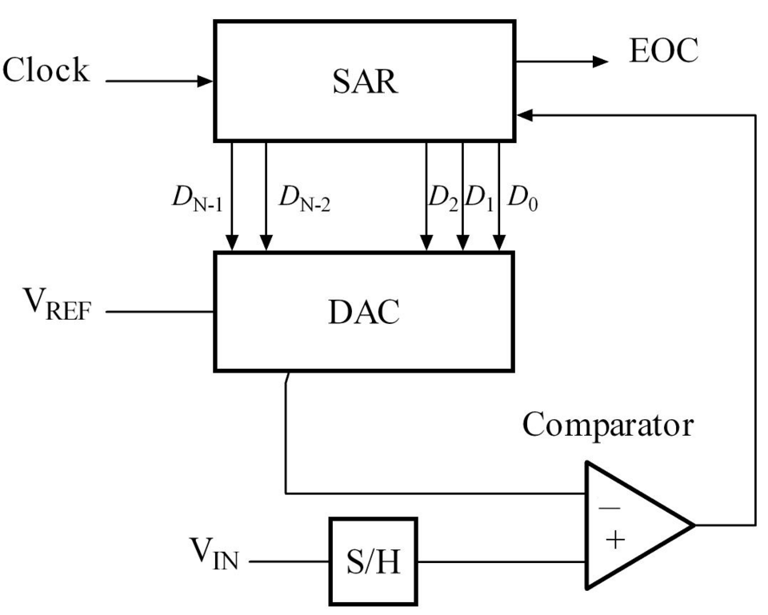
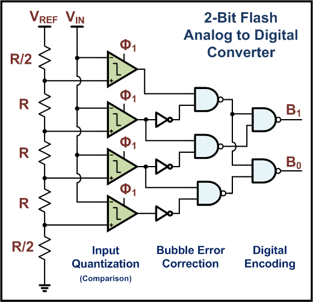
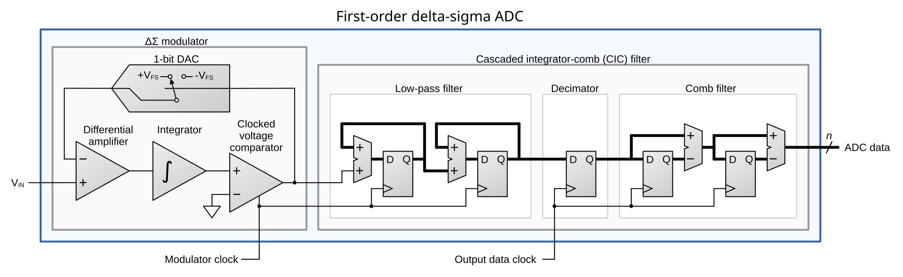
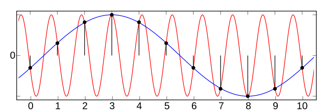
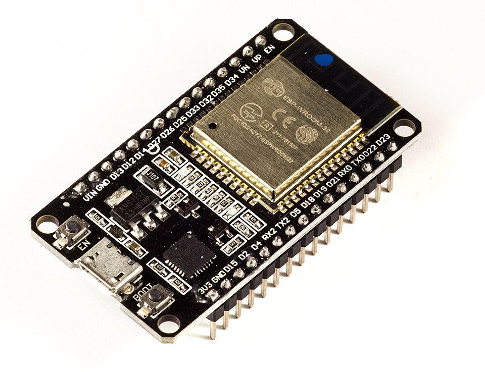
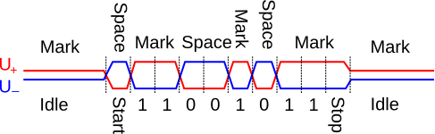
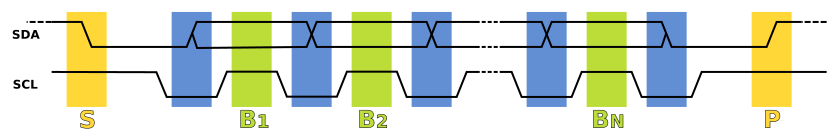
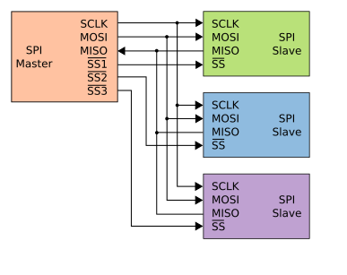
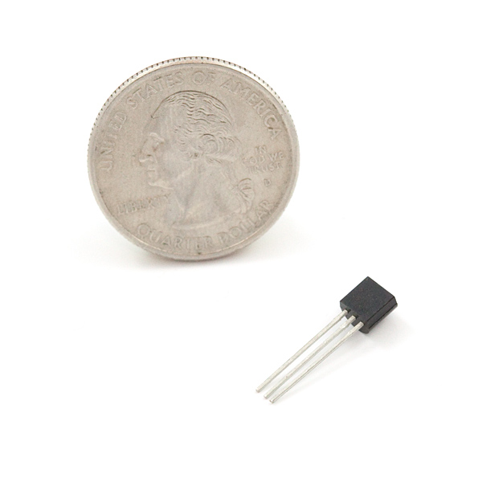

สัญญาณดิจิทัล ADC และ Interface
บทที่แล้วจบที่แรงดันที่พร้อมวัดแต่ยังเป็นอนาล็อก บทนี้ตอบว่าแรงดันกลายเป็นตัวเลขได้อย่างไร และตัวเลขถูกส่งระหว่างอุปกรณ์อย่างไร
เมื่อจบบทนี้ ผู้เรียนควรสามารถ
- แปลงเลขฐานสอง ฐานสิบหก และฐานสิบ และอ่านค่าจากข้อมูลดิบของเซนเซอร์
- คำนวณความละเอียดของ ADC และแยก “ความละเอียด” ออกจาก “ความแม่นยำ”
- อธิบายการทำงานของ DAC และ SAR ADC และเปรียบเทียบ ADC ตระกูลต่าง ๆ
- ตั้งค่า ADC ของ ESP32 (ช่อง, attenuation) ได้อย่างถูกต้อง
- เปรียบเทียบ UART, RS-232, RS-485/Modbus, I²C, SPI, 1-Wire และ CAN แล้วเลือกใช้ให้เหมาะกับงาน
3.1บิต ไบต์ และเลขฐานสิบหก
| หน่วย | ขนาด | จำนวนค่า | ความหมาย / ตัวอย่าง |
|---|---|---|---|
| Bit | 1 บิต | 2 (0/1) | LOW/HIGH หรือ 0 V / 3.3 V |
| Byte | 8 บิต | 256 (0–255) | หน่วยที่ UART, I²C, SPI ส่ง |
| Word | 16 บิต | 65,536 | ค่าใน Modbus, ค่าจาก ADC 12 บิต |
เลขฐานสิบหก 1 หลักแทน 4 บิตพอดี ดังนั้น 1 ไบต์ = 2 หลัก hex เขียนในโค้ดเป็น 0x57 (บางเอกสารเขียน 57h)
แปลงทีละ 4 บิต แทนการหารยาว
| Hex | Binary | คำนวณ | Decimal | ที่มา |
|---|---|---|---|---|
| 0x57 | 0101 0111 | 5×16 + 7 | 87 | I²C address ของ ultrasonic |
| 0x3C | 0011 1100 | 3×16 + 12 | 60 | I²C address ของ OLED |
| 0x010A | — | 1×256 + 0×16 + 10 | 266 | อุณหภูมิจาก XY-MD02 → ÷10 = 26.6 °C |
| 0x0F | 0000 1111 | 15 | 15 |
3.2Quantization และความละเอียด
ADC ขนาด n บิตแบ่งช่วงแรงดันอินพุตออกเป็น 2n ระดับ แต่ละระดับกว้าง 1 LSB ค่าที่อยู่ระหว่างระดับจะถูกปัดลง ความกว้างของหนึ่งระดับคือความละเอียด (resolution)
| บิต | จำนวนระดับ | พบใน |
|---|---|---|
| 8 | 256 | DAC ของ ESP32, เซนเซอร์ราคาถูก |
| 10 | 1,024 | Arduino UNO, ESP8266 |
| 12 | 4,096 | ESP32, Raspberry Pi Pico |
| 16 | 65,536 | ADS1115 |
| 24 | 16.7 ล้าน | HX711 (load cell), MAX31865 |

{kind=link}
ตัวอย่าง: ADC 12 บิต, Vref = 3.3 V → 1 LSB = 3.3/4096 ≈ 0.8 mV
3.3DAC: จากบิตเป็นแรงดัน
เรียน DAC ก่อนเพราะ SAR ADC มี DAC อยู่ภายใน (ESP32 เองก็มี DAC 8 บิต 2 ช่องที่ GPIO25 และ GPIO26)
Binary-weighted DAC
- บิตที่เป็น 1 จะปิดสวิตช์ ให้กระแสจากกิ่งนั้นไหลเข้าโหนด a
- Op-amp รวมกระแสเป็นแรงดัน — คือ summing amplifier จากบทที่ 2
- ใช้ตัวต้านทาน R, 2R, 4R, 8R ทำให้ i3 = 2i2 = 4i1 = 8i0 แต่ละบิตมีน้ำหนักเป็นสองเท่าของบิตถัดลงไป
ทางออกคือ R-2R ladder ที่ใช้ตัวต้านทานเพียงสองค่า (R และ 2R) ไม่ว่าจะกี่บิต
3.4ADC พื้นฐานและ SAR
ADC แบบป้อนกลับทุกชนิดมีโครงสร้างเดียวกัน[6]:
- Comparator รับ Vin ที่ขา + และ VDAC ที่ขา − ให้ผล 1 เมื่อ Vin > VDAC
- DAC n บิต แปลงค่าใน register กลับเป็น VDAC (อ้างอิง Vref)
- Control logic ตัดสินใจว่าจะเปลี่ยนค่าใน register อย่างไร — นี่คือสิ่งที่ทำให้ ADC แต่ละแบบต่างกัน
- Shift register เก็บค่าทดลอง ส่วน storage register เก็บผลลัพธ์ให้ MCU อ่านระหว่างที่แปลงค่าถัดไป

{kind=link}
Digital-ramp ADC นับขึ้นทีละ 1 จากศูนย์จนกว่า VDAC จะตามทัน Vin — ช้า (สูงสุด 2N ครั้ง) และเวลาแปลงขึ้นกับอินพุต
SAR (Successive Approximation Register) ทำงานแบบ binary search: เริ่มจากบิต MSB ค่าทดลองแรก 100… = Vref/2 ถ้า VDAC ไม่เกิน Vin ให้คงบิตไว้ (1) ถ้าเกินให้ล้างบิต (0) แล้วทำบิตถัดไป — ใช้ n ขั้นเสมอ
ตัวอย่าง: SAR 4 บิต, Vref = 15 V, Vin = 10.1 V
| ขั้น | รหัสทดลอง | VDAC | เทียบ | ผล |
|---|---|---|---|---|
| i = 3 | 1000 | 8/16 × 15 = 7.50 V | 7.50 < 10.1 | คง b3 = 1 |
| i = 2 | 1100 | 12/16 × 15 = 11.25 V | 11.25 > 10.1 | ล้าง b2 = 0 |
| i = 1 | 1010 | 10/16 × 15 = 9.375 V | 9.375 < 10.1 | คง b1 = 1 |
| i = 0 | 1011 | 11/16 × 15 = 10.31 V | 10.31 > 10.1 | ล้าง b0 = 0 |
ผลลัพธ์ 10102 = 10 → V = 10/16 × 15 = 9.375 V คลาดจริงไม่เกิน 1 LSB (0.94 V)
3.5ตระกูล ADC และการสุ่มตัวอย่าง
| ชนิด | หลักการ | ความละเอียด / ความเร็ว | พบใน |
|---|---|---|---|
| SAR | Binary search, n clock ต่อ n บิต ต้องมี sample-and-hold | 8–16 บิต, kHz–MHz · สมดุลที่สุดสำหรับ MCU | ESP32, Arduino, Pi Pico |
| Flash | Comparator 2n − 1 ตัวเทียบพร้อมกันใน 1 cycle | 6–8 บิต, ระดับ GHz · แพงและกินไฟ | Oscilloscope, วิดีโอ |
| Pipeline | หลายขั้นต่อกัน แต่ละขั้นแก้ไม่กี่บิตแล้วส่งส่วนที่เหลือต่อ | 10–16 บิต, MHz · มี latency หลาย clock | การสื่อสาร, กล้อง |
| Delta-Sigma (ΔΣ) | สุ่มเร็วมากด้วย comparator 1 บิต แล้ว digital filter เฉลี่ย | 16–24 บิต, Hz–kHz · ทนสัญญาณรบกวนดีมาก | HX711, ADS1115, MAX31865 |
| Dual-slope | Integrator ชาร์จด้วย Vin เวลา T1 แล้วคายด้วย −Vref จนเป็นศูนย์ที่เวลา T2 | ช้ามากแต่แม่นยำ · T2 ∝ Vin ไม่ขึ้นกับ R, C | มัลติมิเตอร์, ตาชั่ง |

{kind=link}

{kind=link}
การสุ่มตัวอย่าง (Sampling)
ถ้าสุ่มช้ากว่านี้จะเกิด aliasing ซึ่งกรองออกภายหลังไม่ได้ เซนเซอร์เกษตรส่วนใหญ่ เช่น อุณหภูมิหรือความชื้นดิน เปลี่ยนช้ามาก สุ่มทุก 1–10 นาทีก็พอ แต่ต้องระวังพัลส์จาก flow meter และสัญญาณรบกวน 50 Hz — ใช้ low-pass filter (บทที่ 2) ก่อนสุ่ม

{kind=link}
3.6ADC ของ ESP32 และ Attenuation

{kind=link}
ข้อมูลในหัวข้อนี้สรุปจากเอกสารของ Espressif[2][3] และผลการวัดของ Llamas[4] และ Monk[5] ตามที่อ้างใน INS03
| หัวข้อ | รายละเอียด |
|---|---|
| ความละเอียด | SAR 12 บิต (0–4095) ปรับได้ 9–12 บิตด้วย analogReadResolution() |
| ช่อง | 18 ช่อง · ADC1: GPIO32–39 · ADC2: GPIO0, 2, 4, 12–15, 25–27 |
| ADC2 กับ WiFi | ADC2 ใช้วงจรร่วมกับ WiFi อ่านไม่ได้ขณะเปิด WiFi — โครงงานใช้ ADC1 เท่านั้น (Activity 4.1 ใช้ GPIO34) |
| Vref | ≈ 1.1 V สร้างในชิป แต่ต่างกันในแต่ละชิป (1.0–1.2 V) ถ้าไม่สอบเทียบคลาดได้ ±10% |
| ช่วงอินพุต | แกน ADC วัดได้ 0 ถึง Vref ขยายช่วงด้วย attenuation 0 / 2.5 / 6 / 11 dB (analogSetAttenuation()) |
| ความเป็นเชิงเส้น | ดีช่วงกลาง ต่ำกว่า ≈ 0.1 V อ่านได้ศูนย์ และที่ 11 dB โค้งงอเหนือ ≈ 2.45 V |
| ความเร็ว | สูงสุด ≈ 100 kS/s ต่อช่องด้วย ESP-IDF — analogRead() ช้ากว่ามากแต่เหลือเฟือ ใช้เวลาว่างอ่านหลายครั้งแล้วเฉลี่ย |
Attenuation คือวงจรแบ่งแรงดันในชิป
แกน ADC วัดได้เพียง 0–1.1 V เสมอ สิ่งที่เราเลือกคือวงจรแบ่งแรงดันด้านหน้า (แบบเดียวกับที่ต่อใน Lab 1) อัตราส่วนแรงดันจาก dB คือ k = 10dB/20 และช่วงเต็มสเกล = 1.1 V × k
| ค่าใน Arduino | dB | k | 1.1 V × k | ช่วงเชิงเส้น |
|---|---|---|---|---|
| ADC_0db | 0 | 1.0 | 1.1 V | 100–950 mV |
| ADC_2_5db | 2.5 | 1.33 | 1.5 V | 100–1250 mV |
| ADC_6db | 6 | 2.0 | 2.2 V | 150–1750 mV |
| ADC_11db (DB_12) | 11 (≈12) | 3.6 (≈4) | 3.9 V* | 150–2450 mV |
* ขาของ ESP32 รับได้ไม่เกิน 3.3 V · ค่าจริงของ 11 dB ใกล้ 12 dB (≈ 4 เท่า) Espressif จึงเปลี่ยนชื่อเป็น DB_12 ใน ESP-IDF 5
- 11 dB ไม่ได้แปลว่า “ช่วง 3.3 V” แต่แปลว่าหาร 3.6 และเป็นเชิงเส้นถึงประมาณ 2.45 V เท่านั้น
- ค่า raw 3723 และ 2097 อาจเป็นแรงดันเดียวกันที่ attenuation ต่างกัน — บันทึก raw count คู่กับ attenuation และ Vref ของชิปนั้นเสมอ
- เกินช่วงแล้วอิ่มตัวเงียบ ๆ: ค่าค้างที่ 4095 แปลงกลับได้เพียง ≈ 1.8–2.2 V แทนค่าจริง 3.15 V (มัลติมิเตอร์จะแสดง “OL” แต่ ADC ไม่เตือน)
การเลือกช่วง: ให้ค่าสูงสุดของเซนเซอร์อยู่ที่ 60–90% ของช่วงเชิงเส้น สำหรับเซนเซอร์ 0–3.3 V มีสองทางเลือก
(1) ใช้ 11 dB แล้วสอบเทียบ 6 จุด (Activity 4.1) หรือ (2) ต่อวงจรแบ่งแรงดันภายนอกลดเหลือ 0–2.2 V แล้วใช้ 6 dB
ฟังก์ชัน analogReadMilliVolts() ใช้ค่าสอบเทียบจากโรงงานใน eFuse ดีกว่า analogRead() แต่ยังควรตรวจกับมัลติมิเตอร์อย่างน้อย 2 จุด
3.7ทำไมเซนเซอร์จึงเป็นดิจิทัล
- MCU ไม่ว่าง: การจับเวลาพัลส์ (HC-SR04, 1-Wire) ต้องการ MCU ว่างระดับ µs แต่ WiFi/LoRa ขัดจังหวะตลอด ค่าจึงกระโดดเป็นครั้งคราว
- สัญญาณรบกวน: สายอนาล็อกยาวรับ 50 Hz และสัญญาณรบกวนจากมอเตอร์ เฟรมดิจิทัลมี checksum/CRC จึงตรวจพบความผิดพลาดแทนที่ค่าจะเพี้ยนเงียบ ๆ
- ระยะทาง: ADC ต้องการสายสั้น ขณะที่ RS-485 ไปได้ 1,200 m และ 1-Wire หลายสิบเมตร
- เซนเซอร์รายงานสถานะได้: ตาชั่งส่ง ST/US (นิ่ง/ไม่นิ่ง), GPS ส่งคุณภาพ fix, Modbus ส่ง error code
ข้อแลกเปลี่ยนคือต้องเรียนรู้ “ภาษา” ของแต่ละ interface ซึ่งมีสองชั้น:
| ชั้นกายภาพ (Physical layer) | ชั้นโปรโตคอล (Protocol layer) |
|---|---|
| แรงดันใดแทน 0 และ 1 (3.3 V, ±12 V, differential) | รูปแบบเฟรม: เริ่ม-จบตรงไหน กี่บิต |
| ใช้สายกี่เส้น เส้นใดใช้ร่วมกัน | มี address หรือไม่ ใครกำหนด |
| ระยะทางและความทนสัญญาณรบกวน | ใครให้ clock: สาย clock แยก หรือตกลงความเร็วล่วงหน้า |
| ต้องมี pull-up หรือ terminator หรือไม่ | ตรวจความผิดพลาดอย่างไร: parity, checksum, CRC, ACK |
② Address คือสิ่งที่แยก bus ออกจาก point-to-point — มี address จึงต่อหลายอุปกรณ์บนสายชุดเดียวได้
3.8UART, RS-232 และ RS-485
UART: เฟรมแบบ asynchronous
- สาย TX และ RX (+ GND) ต่อไขว้กัน: TX ของฝั่งหนึ่งเข้า RX ของอีกฝั่ง · full-duplex
- ไม่มี address → point-to-point เท่านั้น
- ไม่มีสาย clock ทั้งสองฝั่งต้องตกลง baud rate ล่วงหน้า เช่น 9600 หรือ 115200
- 8N1 = 8 data bits, no parity, 1 stop bit (ค่าเริ่มต้นของ
Serial.begin(9600)) - Baud ไม่ตรงกันจะได้ตัวอักษรขยะ ไม่มี error เพราะ UART ไม่มีกลไกตรวจสอบ
- ESP32 มี 3 UART: Serial (USB), Serial1, Serial2 — ใน Lab 4 GPS และ ultrasonic ต่อที่ Serial2
{kind=link}
ASCII หรือ Binary
| ASCII | Binary | |
|---|---|---|
| การอ่าน | อ่านได้ทันทีใน Serial Monitor แทบไม่ต้องใช้ datasheet | ดูเหมือนขยะ ต้องดูในโหมด HEX และต้องมี datasheet (ลำดับไบต์, endianness, scale) |
| ขนาด | ยาว: “+ 100.0 g” ใช้ 9 ไบต์ | กะทัดรัด: 2 ไบต์เก็บ 0–65,535 |
| เหมาะกับ | Debug, อุปกรณ์ที่คนอ่าน | LoRa (payload ≈ 50 ไบต์) — กลุ่ม LoRa ควรใช้ binary |
เฟรมเดียว สามชั้นกายภาพ
| TTL | RS-232 | RS-485 | |
|---|---|---|---|
| Logic 1 | 3.3 V (หรือ 5 V) | −3 ถึง −15 V | A − B < −200 mV |
| Logic 0 | 0 V | +3 ถึง +15 V | A − B > +200 mV |
| สาย | 1 เส้นต่อทิศ + GND | 1 เส้นต่อทิศ + GND | คู่ A/B ใช้ร่วม + GND |
| ระยะจริง | ~1 m | ~15 m | ~1,200 m |
| หลายอุปกรณ์บนสายเดียว | ไม่ได้ | ไม่ได้ | ได้ (Modbus) |
| ต่อตรงกับ ESP32 | ได้ (3.3 V) | ไม่ได้ ขาพัง | ไม่ได้ ต้องผ่าน MAX485 |
| ในรายวิชา | GPS M8N, ultrasonic | ตาชั่งของภาควิชา | XY-MD02, S-Soil MT-02, S700-B |
ชิปแปลง MAX3232 (TTL↔RS-232) และ MAX485 (TTL↔RS-485) เปลี่ยนเฉพาะชั้นกายภาพ เฟรมและ baud rate คงเดิม
RS-485: สัญญาณแบบ differential
- ตัวรับอ่านผลต่างระหว่างสองสาย ไม่ใช่แรงดันเทียบ GND จึงไปได้ไกลกว่าราวสิบเท่า
- สาย A และ B เป็นคู่บิดเกลียว + GND ร่วม (differential ทนความต่างของกราวด์ได้เพียง ≈ ±7 V)
- Half-duplex สลับส่ง/รับด้วยขา DE/RE (ไลบรารี Modbus จัดการให้)
- สูงสุด 1,200 m ที่ ≤ 100 kbit/s และ 32 อุปกรณ์ต่อสาย
- Terminator 120 Ω ที่ปลายทั้งสองของสายเท่านั้น ไม่ใช่ทุกอุปกรณ์ (บางโมดูล MAX485 ติดมาแล้ว)

{kind=link}
Modbus RTU
Master ตัวเดียวเป็นผู้ถาม slave ตอบเมื่อถูกเรียกเท่านั้น slave address (1–247) ผู้ใช้เป็นผู้ตั้ง[7]
| Function code | ชื่อ | ใช้กับ |
|---|---|---|
| 0x03 | Read Holding Registers (อ่าน/เขียนได้) | ค่าตั้งของอุปกรณ์ เช่น address, baud rate |
| 0x04 | Read Input Registers (อ่านอย่างเดียว) | ค่าที่วัดได้ — XY-MD02 เก็บอุณหภูมิและความชื้นที่ 0x0001–0x0002 |
| 0x06 | Write Single Register | เปลี่ยน address ของ slave |
3.9I²C และ SPI
I²C: bus สองสายสำหรับหลายอุปกรณ์
- สาย SDA (ข้อมูล) และ SCL (clock) + GND ใช้ร่วมกันทุกอุปกรณ์
- Address 7 บิต (128 ค่า) ผู้ผลิตกำหนด บางชิปเลือกได้ 2–4 ค่าด้วยขา ADDR
- Master ให้ clock ที่ 100 kHz (standard) หรือ 400 kHz (fast) · ระยะ ≤ 1 m เพราะความจุของสายทำให้ขอบสัญญาณช้า
- Open-drain: อุปกรณ์ทำได้เพียงดึงสายลง ส่วน pull-up ดึงขึ้น จึงใช้สายร่วมกันได้โดยไม่ลัดวงจร และเป็นกลไกของ ACK (slave ดึง SDA ลง)
- Pull-up 4.7–10 kΩ มักติดมากับโมดูล OLED และ ultrasonic แล้ว การเพิ่มอีกจะขนานกันจนค่ารวมต่ำเกินไป — รัน I²C scanner ก่อน ถ้าพบทั้ง 0x3C และ 0x57 ไม่ต้องเพิ่มอะไร
หนึ่ง transaction: Wire.requestFrom(0x57, 3) สร้างลำดับบนสายดังนี้
START → address + บิต R → slave ส่ง 3 ไบต์ตาม clock ของ master → master ตอบ ACK ทุกไบต์ยกเว้นไบต์สุดท้ายตอบ NACK → STOP
ส่วน I²C scanner ก็แค่ลองส่ง START + address + W ไปที่ 1–127 แล้วดูว่า address ใดตอบ ACK

{kind=link}
SPI: เร็วที่สุด หนึ่ง CS ต่ออุปกรณ์
- สี่สาย: SCK, MOSI, MISO ใช้ร่วม และแต่ละอุปกรณ์มีสาย CS ของตัวเอง
- ไม่มี address และไม่มี ACK · master ให้ clock · full-duplex 1–20 MHz ขึ้นไป · ระยะ ≤ 30 cm บนบอร์ด
- Mode 0–3 (CPOL/CPHA) กำหนดว่าอ่านบิตที่ขอบ clock ใด ต้องตรวจ datasheet — ผิด mode ได้ค่าผิดโดยไม่มี error
- ในรายวิชา: MAX6675 (thermocouple type K) และ MAX31865 (PT100) ใน Lab 6 · microSD และจอ TFT ส่วนใหญ่ก็เป็น SPI

{kind=link}
อ่าน MAX6675[8]: ชิปไม่มี register และไม่มีคำสั่ง แค่ดึง CS ลง ให้ clock 16 ครั้ง ก็จะได้ 16 บิตกลับมา
digitalWrite(CS, LOW); // เลือกชิป เริ่มส่งบิต D15 ทาง MISO
uint16_t w = SPI.transfer16(0); // 16 clock: MOSI ส่ง 0 (ชิปไม่สนใจ), MISO รับ 16 บิต
digitalWrite(CS, HIGH); // ปล่อยชิป เริ่มแปลงค่าใหม่ (~220 ms)
bool open = w & 0x0004; // บิต 2 = thermocouple ขาด
float T = ((w >> 3) & 0x0FFF) * 0.25; // เลื่อนขวา 3 บิต เก็บ 12 บิต × 0.25 °C/LSBMAX31865 (PT100)[9] ซับซ้อนกว่าเล็กน้อย: เขียน configuration register ก่อน แล้วอ่าน RTD register 2 ไบต์ — รูปแบบเดิมคือ CS ลง → ส่ง address → รับข้อมูล → CS ขึ้น
3.101-Wire และ CAN bus
1-Wire: สายเดียว ID 64 บิต
- สาย DQ + GND (รับไฟจาก DQ ได้เรียกว่า parasite power หรือใช้สายที่สามเมื่อสายยาว)
- ทุกอุปกรณ์มี ROM address 64 บิตที่ฝังมาจากโรงงาน ไม่ซ้ำกัน: family code 8 บิต (0x28 = DS18B20) + serial 48 บิต + CRC 8 บิต — master ค้นหาได้ด้วยคำสั่ง Search ROM
- Master คุมจังหวะเวลาระดับ µs (reset pulse 480 µs, time slot 60 µs) · ระยะหลายสิบเมตร · ช้า (≈ 16 kbit/s)
- ไลบรารี OneWire ปิด interrupt ชั่วครู่ระหว่างส่ง เพราะ MCU ต้องจับเวลาเอง

{kind=link}
| DS18B20 resolution | ขั้น | เวลาแปลง |
|---|---|---|
| 9 บิต | 0.5 °C | 94 ms |
| 10 บิต | 0.25 °C | 188 ms |
| 11 บิต | 0.125 °C | 375 ms |
| 12 บิต | 0.0625 °C | 750 ms |
- ความแม่นยำ ±0.5 °C (−10 ถึง 85 °C)[10] ทุก resolution — ย้ำอีกครั้งว่าความละเอียดไม่ใช่ความแม่นยำ
- เดินสายแบบ daisy chain ไม่ใช่ star · สายยาวใช้คู่บิดเกลียวและลด pull-up เหลือ ≈ 2.2 kΩ · บอร์ดของภาควิชามี 4.7 kΩ แล้ว ห้ามเพิ่ม
- ในโครงงาน แต่ละ soil node มี DS18B20 2–3 ตัวที่ความลึกต่างกันบนสายเดียว ใช้ชดเชยค่าความชื้นดินตามอุณหภูมิ
- DS18B20 ปลอมพบบ่อย ตรวจเทียบกับ PT100 ที่ Lab 6 ก่อนติดตั้ง · โหมด “1-WIRE” ของ HC-SR04 รุ่น 2020 ไม่ใช่โปรโตคอล Dallas 1-Wire
CAN bus
- ชั้นกายภาพคล้าย RS-485 (คู่ differential CAN_H/CAN_L, 120 Ω ที่ปลายทั้งสอง) แต่ไม่มี master
- ไม่มี address ผู้รับ มีแต่ message ID บอกว่าข้อมูลคืออะไร ทุกโหนดได้ยินทุกข้อความแล้วกรองเอง
- Arbitration: บิต 0 (dominant) ชนะบิต 1 (recessive) ID ที่ต่ำกว่าจึงชนะ ผู้แพ้หยุดแล้วส่งใหม่ ไม่มีข้อมูลสูญหาย
- ระยะ: 1 Mbit/s ที่ 40 m, 250 kbit/s ที่ 250 m, 125 kbit/s ที่ 500 m · ฮาร์ดแวร์จัดการ CRC, ACK และตัดโหนดที่เสียออกเอง
- ESP32 มี CAN controller ในตัว (TWAI) เพิ่ม transceiver SN65HVD230 ก็ต่อเข้า bus ของยานยนต์ได้
- เครื่องจักรกลเกษตร: SAE J1939 (ข้อมูลเครื่องยนต์: รอบ อัตราการใช้น้ำมัน, 250 kbit/s, ID 29 บิต จัดเป็น PGN/SPN) และ ISOBUS (ISO 11783) ให้รถแทรกเตอร์คุยกับอุปกรณ์ต่อพ่วง เช่น จอเดียวคุมทุกอุปกรณ์ (UT/VT), การให้ปุ๋ยแบบ variable-rate (TC)
{kind=link}
3.11การเลือก Interface
| Interface | สาย | Address | Clock | ระยะ | ใช้กับ |
|---|---|---|---|---|---|
| GPIO / timing | 1–2 | ไม่มี | โค้ดผู้ใช้ | < 1 m | HC-SR04 trig/echo, พัลส์ flow, รีเลย์ |
| ADC (อนาล็อก) | 1 | ไม่มี | ผู้ใช้สั่งอ่าน | สั้นที่สุด | NTC, LDR, MPX5010DP, capacitive |
| UART TTL | 2 (TX/RX) | ไม่มี (1:1) | ตกลง baud | ~1 m | GPS M8N, ultrasonic โหมด UART |
| UART RS-232 | 2 + GND | ไม่มี | ตกลง baud | ~15 m | ตาชั่งของภาควิชา |
| RS-485 / Modbus | 2 differential | ผู้ใช้ตั้ง | master ถาม slave ตอบ | ~1,200 m | XY-MD02, S-Soil MT-02, S700-B |
| I²C | 2 (SDA/SCL) | 7 บิต ผู้ผลิตตั้ง | master | < 1 m | OLED 0x3C, ultrasonic 0x57 |
| SPI | 4 (SCK/MOSI/MISO/CS) | ไม่มี ใช้ CS | master เร็วสุด | < 30 cm | MAX6675, MAX31865, microSD |
| 1-Wire | 1 + GND | ROM 64 บิตจากโรงงาน | master, µs | หลายสิบ m | DS18B20 |
| CAN | 2 differential | message ID | multi-master | 40 m @ 1 Mbit/s | รถแทรกเตอร์, ISOBUS |
② ที่มาของ address ต่างกัน: ผู้ใช้ตั้ง (Modbus), ผู้ผลิตตั้ง (I²C), ฝังจากโรงงาน (1-Wire)
③ ระยะเป็นเรื่องชั้นกายภาพ: SPI และ I²C เร็วแต่สั้น ส่วน RS-485 และ 1-Wire ออกแบบมาสำหรับสายยาวในภาคสนาม
Lab 4: Digital Signals with ESP32
| กิจกรรม | Interface | สิ่งที่จะเห็น/ทำ |
|---|---|---|
| 4.0 ตาชั่ง RS-232 (สาธิต) | UART / RS-232 | สัญญาณ ±12 V บนออสซิลโลสโคป, ข้อความ ASCII, สถานะ ST/US |
| 4.1 ESP32 ADC | ADC, attenuation | สอบเทียบ 6 จุดเทียบมัลติมิเตอร์ หา m, c ของ V = m·count + c |
| 4.2 GPS fix quality | UART / TTL | ตรวจคุณภาพ fix ก่อนใช้ตำแหน่ง |
| 4.3 Ultrasonic โหมด UART | UART / binary | ถอดรหัสไบต์ด้วยมือจาก logic analyzer |
| 4.4 Ultrasonic I²C + OLED | I²C | Scan พบ 0x3C และ 0x57 และดู transaction บนสาย |
| 4.5 XY-MD02 | RS-485 / Modbus | สัญญาณ differential และเฟรม request/response |
| 4.8 Relay + deadband | GPIO | ก้าวแรกจากการวัดสู่การควบคุม |
เตรียมก่อนแล็บ: ติดตั้ง Arduino IDE + ESP32 board package + ไดรเวอร์ CP2102/CH340 · รัน Blink บน ESP32 DevKit แล้วส่งภาพหน้าจอ · อ่านหัวข้อ UART, Modbus, I²C, SPI, 1-Wire และตารางการเลือก interface
✎แบบฝึกหัดท้ายบท
ตอนที่ 1: ปรนัยและเติมตัวเลข
โครงงานใช้ WiFi ส่งข้อมูล ควรต่อเซนเซอร์อนาล็อกเข้าขาใดของ ESP32?
SAR ADC ขนาด 10 บิต ใช้กี่ขั้นในการแปลงหนึ่งครั้ง?
ตั้ง baud rate ของ ESP32 ไม่ตรงกับ GPS จะเกิดอะไรขึ้น?
สาย RS-485 ยาว 200 m มีเซนเซอร์ 4 ตัว ควรติด terminator 120 Ω ที่ใด?
Address ของอุปกรณ์ 1-Wire (เช่น DS18B20) มาจากไหน?
ต้องการอ่าน load cell ที่ให้สัญญาณระดับ mV ด้วยความละเอียดสูง ควรเลือก ADC แบบใด?
ESP32 อ่านค่า 4095 จากเซนเซอร์ที่ตั้ง attenuation 6 dB ข้อสรุปใดถูกต้อง?
ADC 10 บิตที่ Vref = 5 V มีความละเอียด (1 LSB) เท่าใด?
Flash ADC ขนาด 8 บิต ต้องใช้ comparator กี่ตัว?
Modbus register ของเซนเซอร์อุณหภูมิอ่านได้ 0x00FA และมี scale ÷10 อุณหภูมิเท่าใด?
MAX6675 ส่งค่า w = 0x0C80 มา อุณหภูมิเท่าใด? (T = ((w >> 3) & 0x0FFF) × 0.25)
ESP32 ตั้ง attenuation 6 dB ช่วงเต็มสเกลของอินพุตประมาณเท่าใด? (Vref = 1.1 V)
ตอนที่ 2: โจทย์คำนวณพร้อมเฉลย
โจทย์ 1 — ไล่ขั้นตอน SAR ADC
SAR ADC 4 บิต, Vref = 10 V, Vin = 6.8 V จงแสดงแต่ละขั้นและหาผลลัพธ์
ขั้นละ 10/16 = 0.625 V
| ขั้น | รหัส | VDAC | ผล |
|---|---|---|---|
| i = 3 | 1000 | 8 × 0.625 = 5.000 V < 6.8 | คง b3 |
| i = 2 | 1100 | 12 × 0.625 = 7.500 V > 6.8 | ล้าง b2 |
| i = 1 | 1010 | 10 × 0.625 = 6.250 V < 6.8 | คง b1 |
| i = 0 | 1011 | 11 × 0.625 = 6.875 V > 6.8 | ล้าง b0 |
ผลลัพธ์ 10102 = 10 → 6.25 V (ต่ำกว่าค่าจริง 0.55 V ซึ่งน้อยกว่า 1 LSB)
โจทย์ 2 — สอบเทียบ ADC ของ ESP32 (แนว Activity 4.1)
ที่ attenuation 11 dB วัดด้วยมัลติมิเตอร์ได้ 0.50 V ขณะ ADC อ่านได้ 480 และ 2.00 V ขณะอ่านได้ 2340 จงหาสมการ V = m·count + c แล้วคำนวณแรงดันเมื่ออ่านได้ 1500
m = (2.00 − 0.50)/(2340 − 480) = 1.50/1860 = 0.000806 V/count
c = 0.50 − 0.000806 × 480 = 0.50 − 0.387 = 0.113 V
ที่ count 1500: V = 0.000806 × 1500 + 0.113 ≈ 1.32 V
ในแล็บจริงใช้ 6 จุดแล้ว fit ด้วย least squares และหลีกเลี่ยงช่วงต่ำกว่า 0.15 V และสูงกว่า 2.45 V ที่ไม่เป็นเชิงเส้น
โจทย์ 3 — เลือก interface สำหรับ soil node
Soil node ต้องอ่าน (ก) เซนเซอร์ความชื้นดินที่อยู่ห่าง 30 m (ข) อุณหภูมิดิน 3 ระดับความลึก (ค) จอ OLED บนกล่องเดียวกัน จงเลือก interface และให้เหตุผล
(ก) RS-485 / Modbus — สัญญาณ differential ทนสัญญาณรบกวนจากปั๊มในระยะหลายสิบเมตร ถ้าใช้อนาล็อกสาย 30 m จะรับสัญญาณรบกวนมาก
(ข) 1-Wire (DS18B20 × 3) — ต่อบนสายเดียวแบบ daisy chain แต่ละตัวมี ROM ID ไม่ซ้ำ จึงแยกแต่ละความลึกได้
(ค) I²C — อยู่บนบอร์ดเดียวกัน ระยะสั้น ใช้แค่สองสาย และต่ออุปกรณ์อื่นบน bus เดียวกันได้
โจทย์ 4 — ASCII หรือ Binary สำหรับ LoRa
Node ต้องส่งอุณหภูมิ (−10.0 ถึง 60.0 °C) ความชื้นดิน (0.0–100.0%) และแรงดันแบตเตอรี่ (0.00–5.00 V) ผ่าน LoRa จงเปรียบเทียบขนาด payload แบบ ASCII กับ binary
ASCII เช่น "-10.0,100.0,4.20" ใช้ประมาณ 16 ไบต์
Binary: เก็บแต่ละค่าเป็นจำนวนเต็ม 16 บิต (×10, ×10, ×100) → อุณหภูมิ −100…600, ความชื้น 0…1000, แรงดัน 0…500 ใช้ 3 × 2 = 6 ไบต์
Binary เล็กกว่าเกือบ 3 เท่า ส่งได้เร็วขึ้นและประหยัดพลังงาน แต่ผู้รับต้องรู้ลำดับไบต์ endianness และ scale — ต้องเขียนเป็นเอกสารร่วมกันทุกกลุ่ม
§แหล่งอ้างอิง
เอกสาร
- Udompetaikul, V. (2026). INS03: Digital Signals (v9) [เอกสารประกอบการสอน]. รายวิชา 01386309 Agricultural Instrumentation & IoT, สถาบันเทคโนโลยีพระจอมเกล้าเจ้าคุณทหารลาดกระบัง.
- Espressif Systems. ESP-IDF Programming Guide v4.4 — Analog to Digital Converter (ADC). https://docs.espressif.com/projects/esp-idf/en/v4.4/esp32/api-reference/peripherals/adc.html
- Espressif Systems. ESP32 Series Datasheet. https://www.espressif.com/sites/default/files/documentation/esp32_datasheet_en.pdf
- Llamas, L. How to use the ADC analog inputs in an ESP32. luisllamas.es. https://www.luisllamas.es/en/esp32-adc/
- Monk, S. (2024). ผลการวัด ADC ของ ESP32 ที่ attenuation 0 dB, Doctor Monk’s DIY Electronics Blog — อ้างถึงใน [1]. https://doctormonk.com/
- Kuphaldt, T. R. Lessons in Electric Circuits, Vol. IV — Digital, Chapter 13: Digital-Analog Conversion. All About Circuits. https://www.allaboutcircuits.com/textbook/digital/chpt-13/
- Modbus Organization. (2012). MODBUS Application Protocol Specification V1.1b3. https://www.modbus.org/file/secure/modbusprotocolspecification.pdf
- Analog Devices (Maxim Integrated). MAX6675 — Cold-junction-compensated K-thermocouple-to-digital converter. https://www.analog.com/en/products/max6675.html
- Analog Devices (Maxim Integrated). MAX31865 — RTD-to-digital converter. https://www.analog.com/en/products/max31865.html
- Analog Devices (Maxim Integrated). DS18B20 — Programmable resolution 1-Wire digital thermometer. https://www.analog.com/en/products/ds18b20.html
รูปประกอบ
รูปจาก Wikimedia Commons ใช้ตามสัญญาอนุญาตที่ระบุ โดยไม่ได้ดัดแปลงนอกจากย่อขนาด ส่วนรูปวงจรและกราฟที่ไม่มีเครดิตจัดทำขึ้นใหม่สำหรับสื่อการสอนนี้
- รูปที่ 3.1 — Hyacinth, “3-bit resolution analog comparison.png”, Wikimedia Commons, https://commons.wikimedia.org/wiki/File:3-bit_resolution_analog_comparison.png (CC BY-SA 3.0)
- รูปที่ 3.2 — White Flye, “SA ADC block diagram.png”, Wikimedia Commons, https://commons.wikimedia.org/wiki/File:SA_ADC_block_diagram.png (CC BY-SA 2.5)
- รูปที่ 3.4 — Jon Guerber, “Flash ADC.png”, Wikimedia Commons, https://commons.wikimedia.org/wiki/File:Flash_ADC.png (CC BY 3.0)
- รูปที่ 3.5 — Lambtron, “Delta-sigma ADC.svg”, Wikimedia Commons, https://commons.wikimedia.org/wiki/File:Delta-sigma_ADC.svg (CC BY-SA 4.0)
- รูปที่ 3.6 — Moxfyre, “AliasingSines.svg”, Wikimedia Commons, https://commons.wikimedia.org/wiki/File:AliasingSines.svg (CC BY-SA 3.0)
- รูปที่ 3.7 — Ubahnverleih, “ESP32 Espressif ESP-WROOM-32 Dev Board.jpg”, Wikimedia Commons, https://commons.wikimedia.org/wiki/File:ESP32_Espressif_ESP-WROOM-32_Dev_Board.jpg (CC0)
- รูปที่ 3.8 — IngenieroLoco, “UART timing diagram.svg”, Wikimedia Commons, https://commons.wikimedia.org/wiki/File:UART_timing_diagram.svg (CC BY-SA 4.0)
- รูปที่ 3.9 — Roy Vegard Ovesen, “RS-485 waveform.svg”, Wikimedia Commons, https://commons.wikimedia.org/wiki/File:RS-485_waveform.svg (CC BY-SA 3.0)
- รูปที่ 3.11 — Marcin Floryan, “I2C data transfer.svg”, Wikimedia Commons, https://commons.wikimedia.org/wiki/File:I2C_data_transfer.svg (Public domain)
- รูปที่ 3.12 — Cburnett, “SPI three slaves.svg”, Wikimedia Commons, https://commons.wikimedia.org/wiki/File:SPI_three_slaves.svg (CC BY-SA 3.0)
- รูปที่ 3.13 — SparkFun Electronics, “SparkFun DS18B20 1.jpg”, Wikimedia Commons, https://commons.wikimedia.org/wiki/File:SparkFun_DS18B20_1.jpg (CC BY 2.0)
- รูปที่ 3.14 — Fröstel (S.G.), “CAN telegramm 2.0A.svg”, Wikimedia Commons, https://commons.wikimedia.org/wiki/File:CAN_telegramm_2.0A.svg (CC0)